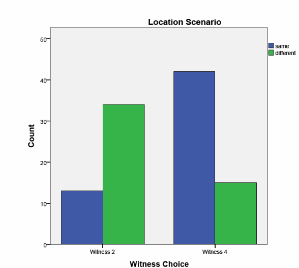
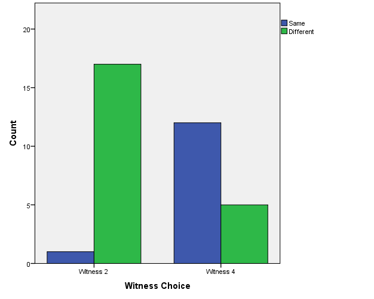
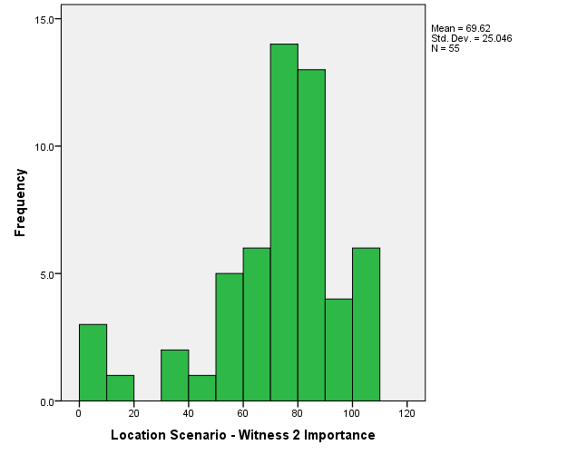
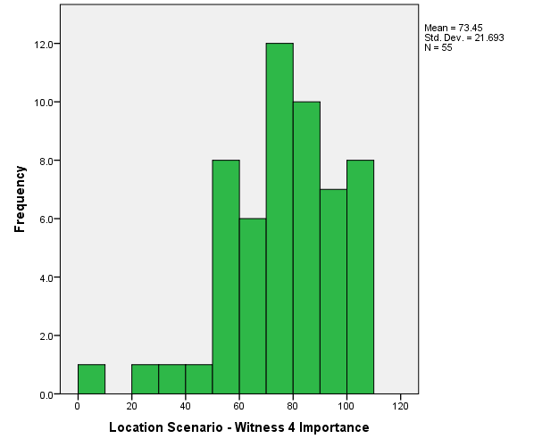
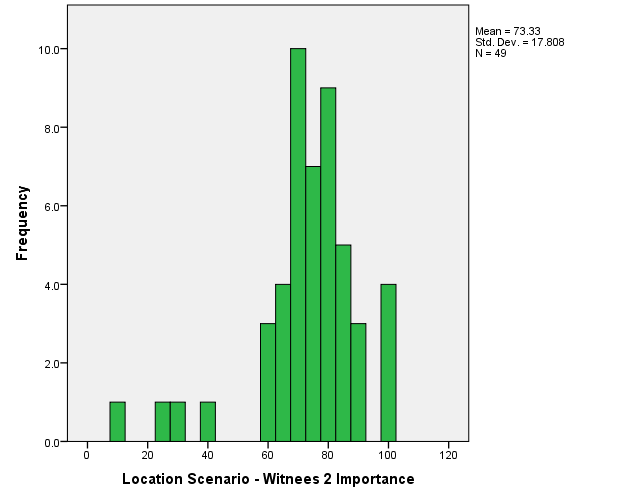
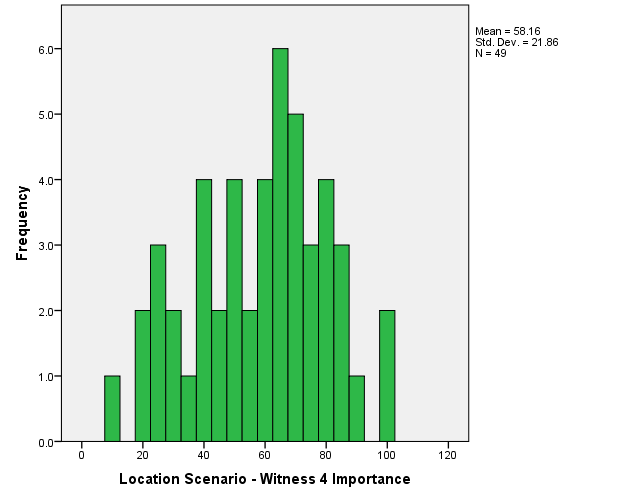
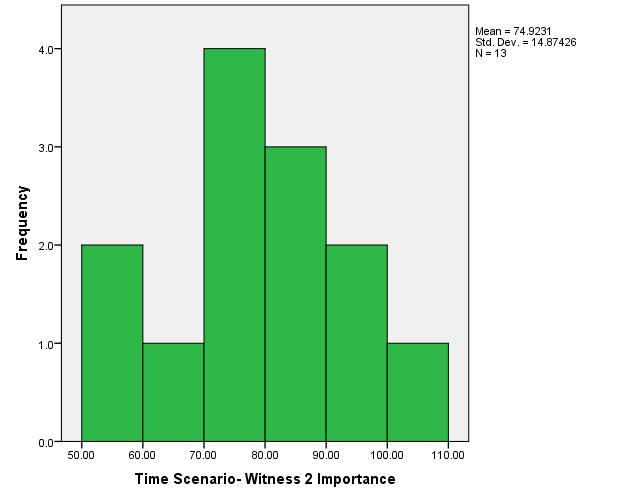
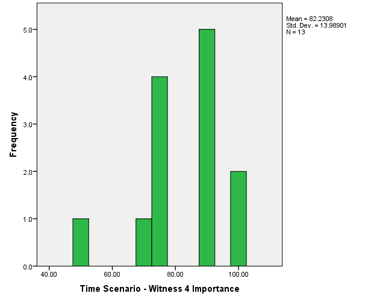
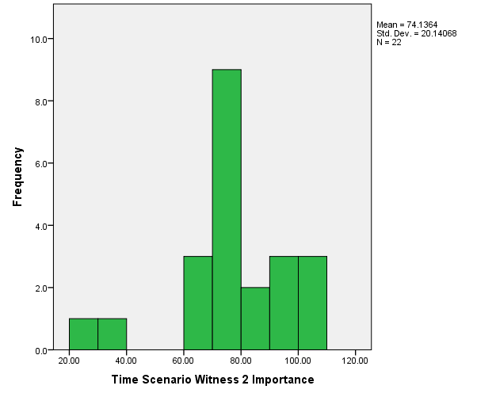
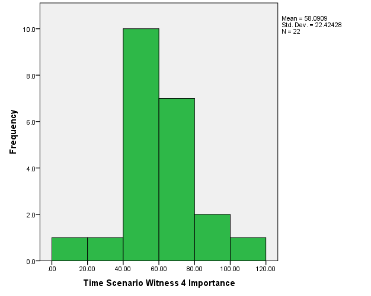

Participants were allocated at random to the 'same' and 'different' conditions. However, it is good practice to double check there are no systematic differences in the group characteristics (age and gender in this instance). An independent samples t-test can be used to ensure those allocated to the 'same' condition are not (on average) a different age to those in the 'different' condition.
When performing a t-test, it is good practice to first assess whether the
assumptions
underlying the test hold. To check the normality assumption, we can use
a Kolmogorov-Smirnoff or Shapiro-Wilks test.
SPSS: Shapiro-Wilks
The test results are W(55) = 0.452, p < .001 and
W(48) = 0.485, p <.001 for the 'same' and 'different'
conditions respectively. From this, we can see that ages of participants
in both conditions differ significantly from the normal
distribution. This violation of the assumptions may bias the test
results and as such, the non-parametric equivalent of the independent
samples t-test (Mann-Whitney U Test) could be used. The results of the
Mann-Whitney test show that there are no significant differences
between the groups in terms of their age (U=1294, p=.856).
SPSS: Mann-Whitney
An independent samples t test also shows there is no significant difference between the groups (t(100)=0.380, p=.705). However, there may still be problems with the groups as participants come from a very limited age range (the majority are 18-22). This will ultimately affect the generalizability of these results to the wider population. This is an issue with many studies in psychology, which tend to rely on student samples.
Calculating the frequency of each gender
of participants can be informative regarding whether there are equal
amounts of males and females in either group. In this sample, only
19.2% of participants are male, so the gender of participants
is clearly unbalanced. This may affect the generalisabilty of the results.
SPSS:
Frequencies
It is also important to test
whether there is an imbalance between the participants allocated to the
different conditions. Whilst the effect of gender can be accounted for
in some analyses by using it as a covariate, it is still not ideal as a
more complex model has reduced statistical power (through reducing
degrees of freedom) to detect an effect. We can test for whether there
are differences between the conditions in terms of the numbers of males
and females in each group by using a Chi-square test. Note at this stage
that if participants were allocated to the 'same' condition in the
location scenario, they were then allocated to the 'different' condition
in the time scenario, so we do not need to test each of these scenarios
separately to see if there is a difference. Before performing a Chi-square
test, you should check whether your data conform to its
assumptions.
It is clear there is no significant difference between the 'same'
and 'different' conditions in terms of the numbers of males and females
in each group (χ2(1,103)=0.083, p=.774).
Thus, whilst the substantially smaller number of males compared to
females in the experiment as a whole is likely to reduce the
generalizability of the results, there are no systematic biases
whereby all males are allocated to one condition which could contaminate
results.
SPSS:
Chi-square
The probability ratings for question G provides information to check whether the participants' perception of witness reliabilities differed between the 'same' and 'different' condition in both the 'time' and 'location' scenario. An independent samples t-test can be used to test for differences between these ratings for the 'same' and 'different' condition in each scenario. First, it has to be ensured that the assumptions for an independent t-test are met. These, plus the instructions on how to complete these on SPSS are detailed above. From this we can see that the distribution of the data in the 'same' condition of the 'location' scenario differs significantly from the normal distribution W(55)=0.944, p=.012, while there is no cause for concern in the 'different' condition, W(49)=0.972, p=.285. For the 'time' scenario, neither the 'same' [W(49)=0.972, p=.294] nor the 'different' condition [W(55)=0.958, p=.053] differs significantly from Normality, although the 'different' condition is not far off. Although we can use a t-test in most cases, especially as the t-test is relatively robust against small deviations from Normality, perhaps a non-parametric test such as the Mann-Whitney test is a more cautious alternative.
The Mann Whitney tests show there is a significant difference between the 'same' and 'different' condition in the location scenario (U=494, p<.001), but that this is not the case in the time scenario (U=1192.5, p=.312). This demonstrates that participants were not sensitive to the manipulation in the 'time' scenario. Similar results are obtained when this is tested with an independent samples t-test (TODO).
Due to the failure of the 'time' scenario to lead to differences in the judged reliability of the witnesses, for this scenarion, we will analyse data from Experiment 2. In Experiment 2, the differences in time between the witness sightings in the 'same' and 'different' condition were increased, and the participants were also provided with a diagrammatic aid. The check on the sample characteristics will have to be completed as before, in addition to the manipulation check. Tests on the sample characteristics show that there are no significant differences between the allocation of participants to the conditions 'same' or ‘different’ in terms of age (U=121, p=.468), and in terms of the distribution of gender (χ2(1,34)=0.326, p=.568). However, the criticisms of the groups in terms of having a narrow age range and skew in the gender (as above) affecting generalizability apply here also.
The manipulation check demonstrates that participants were sensitive to the diagnostic value of the information as there was a significant difference between ‘same’ and ‘different’ conditions the ratings for question G in the probability judgment questionnaire (U=65.5, p=.007).
Throughout the remainder of this section, we will now use the data from Experiment 1 for the 'location' scenario, and the data from Experiment 2 for the 'time' scenario.
Visualisation of the data is often a useful first step to analysis. The main variable of interest here is the choice of witness, which is a categorical variable. A useful plot for such a variable is a bar chart showing the frequency of choices. These bar charts below demonstrate, for each of the scenarios and conditions, participants' choices of either witness 2 or witness 4. These graphs indicate that the results are in line with the expectations: participants choose witness 2 more often in the “different” compared to the “same” condition. Whether this efffect of condition is significant will be explored next in a logistic regression analysis.

'Same' Condition |

'Different' Condition |
As witness choice is a dichotomous variable (a categorical variable with two levels), we will use logistic regression rather than a linear regression or a t-test to assess the effect of condition. In this logistic regression, we will predict witness choice (dependent variable) as a function of condition (categorical predictor). The benefit of logistic regression is that it does not require satisfaction of many typical assumptions associated with linear models, such as linearity, homoscedascity, or normality of the data.
In this logistic regression analysis, we model the log odds of witness choice as a linear function of the predictors. SPSS uses the first level of the dependent variable (here, 'witness 2') as the numerator in these odds, and the second level as the denominator. SPSS allows the inclusion of categorical predictors in the model by constructing dummy coded predictor variables. In the construction of these dummy variables, the last level of the categorical predictor (the "same" condition here) is used as the reference group. The resulting model can be formally specified in the following equation $$\log \left(\frac{P(\text{witness} = 2)}{1 - P(\text{witness} = 2)}\right) = \beta_0 + \beta_1 X_{1i} + \ldots \beta_k X_{ik}$$ The coefficients βj reflects each predictors' independent contribution to the log odds, and as such can be seen as a measure of the strength of the relationship between the dependent variable and the predictor.
The log likelihood is the probability of observing the data under the null hypothesis (all coefficients in the regression equation take the value zero), and the alternative hypothesis (the model with the predictors gives significantly better predictions than chance). From this statistic, we can complete the likelihood ratio test, which is a test of the difference between the alternative hypothesis model, with the null hypothesis model subtracted from this. In simpler terms, this tells us whether the inclusion of the predictors improved the model to an extent where it is significantly different from chance.
SPSS compares the model to a null model with only an intercept. This corresponds to the model in which the coefficients (βj) for all predictors are set to 0. SPSS first reports the results of this null model. The "classification table" shows the predictions arising from the null model and
how they correspond to the observed witness choices.
SPSS: Logistic regression
|
Block 0: Classification Table |
|||||
|
Observed |
Predicted |
||||
|
Location_Choice |
Percentage Correct |
||||
|
2 |
4 |
|
|||
|
Step 0 |
Location_Choice |
2 |
0 |
47 |
.0 |
|
4 |
0 |
57 |
100.0 |
||
|
Overall Percentage |
|
|
54.8 |
||
As there are more Witness 4 choices than Witness 2 choices, the best prediction without taking any predictors into account would be to predict a Witness 4 choice for every participant. The classification table above tells us that this prediction is correct 54.8% of the time.
The null model includes only an intercept (constant). The intercept is estimated to as 0.193, which is not significantly different from 0.
|
Variables in the Equation |
|||||||
|
|
B |
S.E. |
Wald |
df |
Sig. |
Exp(B) |
|
|
Step 0 |
Constant |
.193 |
.197 |
.959 |
1 |
.328 |
1.213 |
The table with information about the variables which are not included in the model gives information regarding whether the inclusion of condition (ie, ‘same’ or ‘different’) in the model would significantly improve the model's predictions, which it would.
|
Variables not in the Equation |
|||||
|
|
Score |
df |
Sig. |
||
|
Step 0 |
Variables |
Location_Condition(1) |
21.899 |
1 |
.000 |
|
Overall Statistics |
21.899 |
1 |
.000 |
||
Block 1 refers to the model with the predictors included. Classification improves to 73.1% correct when we include the predictor variable of 'condition' in the model. The estimated slope for the dummy variable which codes for condition is positive and significant, indicating that there were significantly more Witness 4 choices in the "same" compared to the "different" condition.
|
Block 1: Classification Table |
|||||
|
Observed |
Predicted |
||||
|
Location_Choice |
Percentage Correct |
||||
|
2 |
4 |
|
|||
|
Step 1 |
Location_Choice |
2 |
34 |
13 |
72.3 |
|
4 |
15 |
42 |
73.7 |
||
|
Overall Percentage |
|
|
73.1 |
||
|
Variables in the Equation |
|||||||
|
|
B |
S.E. |
Wald |
df |
Sig. |
Exp(B) |
|
|
Step 1a |
Location_Condition(1) |
1.991 |
.444 |
20.142 |
1 |
.000 |
7.323 |
|
Constant |
-.818 |
.310 |
6.970 |
1 |
.008 |
.441 |
|
|
a. Variable(s) entered on step 1: Location_Condition. |
|||||||
SPSS can add variables to the logistic regression model in a stepwise fashion. In this analysis, we consider only a single predictor which codes for the "same" vs "different" condition, so we only use one step. The "omnibus tests of model coefficients" reflect comparisons between the models at each step, which here shows that the additional predictor significantly improves the model predictions (χ2(1)=22.694, p<.001). The "Model Summary" table reports other measures regarding the overall fit of the model. The "-2 Log likelihood" reflects the probability of the data according to the model, and can be used to construct a likelihood ratio test similar to the one reported in the "Omnibus tests of Model Coefficients" table. The Cox and Snell and Nagelkerke R Squared values are interpreted similarly to R2 measures for linear regression. While the omnibus test indicates a drastic improvement in the model predictions due to accounting for condition, a Nagelkerke R2=0.262 demonstrates that the overall amount of variance which this model is able to explain is still quite low.
|
Omnibus Tests of Model Coefficients |
||||||||||||||
|
|
Chi-square |
df |
Sig. |
|||||||||||
|
Step 1 |
Step |
22.694 |
1 |
.000 |
||||||||||
|
Block |
22.694 |
1 |
.000 |
|||||||||||
|
Model |
22.694 |
1 |
.000 |
|||||||||||
|
Model summary |
||||||||||||||
|
Step |
-2 Log likelihood |
Cox & Snell R Square |
Nagelkerke R Square |
|||||||||||
|
1 |
120.518 |
.196 |
.262 |
|||||||||||
A logistic regression was also completed on the "time" scenario data. Overall, the model with condition as a predictor variable was able to 82.9% of the data correctly. The addition of the predictor coding for condition improved the model with respect to the null model [χ2(1)=17.85, p<.001]. The Nagelkerke R2=0.533 indicates that this model was good fit for the data. The constant term contributed significantly to prediction [Z=5.786, p=.016], as did the addition of the condition as the predictor variable [Z=10.248, p=.001].
As an alternative to a logistic regression analysis, a Chi-squared test can be used to test whether participants' choice of witnesses differs significantly between the conditions. The null hypothesis tested is that witness choice is independent from condition. In the location scenario, it is clear that choices people make are not independent from condition [χ2(1)=21.89, p<.001]. This is also the case for the time scenario [χ2(1)=15.838, p< .001].
How the importance ratings for witness 2 and 4 are affected by each condition can be analysed with a repeated measures ANOVA. A repeated measures ANOVA is suitable as each participant rates both witness 2 and witness 4; witness can thus be treated as a within-subjects factor. The condition "same" or "different" is a between subjects factor, and person characteristics such as age and gender can be included as covariates. As usual, before proceeding with the analysis, we should consider the assumptions underlying the test.
It can be useful to plot the data as a histogram initially in order to see if it complies with the assumption of normality.The histograms seem to indicate that the dependent variables are not normally distributed within each condition. Participants seemed reluctant to use the lower ratings. Shapiro-Wilks tests confirmed this suspicion, indicating significant deviations from normality in most cases. Although this may affect the validity of the analysis, ANOVA tends to be quite robust to the violation of their assumptions. The assumption of sphericity tends to be more important. This is tested by Mauchly's test. As the within-factor has only two levels in the present analysis, the assumption of sphericity always holds.
| Location scenario | |


'Same' Condition |


'Different' Condition |
| Time scenario | |


'Same' Condition |


'Different' Condition |
Despite the deviations from normality, we will proceed with the
repeated-measures ANOVA, keeping in mind that, although ANOVAs tend
to be resilient to non-normality, the results may be biased to a
certain extent.
SPSS: Repeated-measures ANOVA